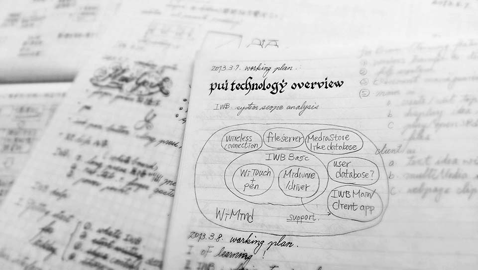

Chiu Wei-Chieh's Portfolio/work/IxD/PUI
PUI projects
Summary : project coordinator, interaciton design, GUI design, front-end coding.
PUI ( Perceptual User Interface ) is a special R&D division of Wistron corporation. This department dedicates to develop extended user interface, i.e. motion & voice control, gesture recognition, computer vision, etc. My major role here was to attune team members to design process and target. Besides, I also helped realizing concepts by researching, planning, prototyping, designing UI, GUI and front-end coding.
During these days, I participated several projects, including smart home entertainment system, interactive whiteboard and gesture control application.
